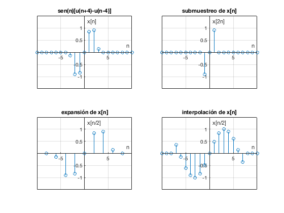

INTRODUCCIÓN AL ESCALONAMIENTO HORIZONTAL DE SEÑALES EN TIEMPO DISCRETO.
Contents
* Compresión horizontal de una señal en tiempo discreto
%Al comprimir una señal x[n]con un factor b (el cuál se limita a numeros %enteros) y si n ? [-8,8] %tenemos que para todos lo valores de n %x[bn]=...,x[-2b],x[-b],x[0],x[b],x[2b],... %entonces la nueva función solo considera entradas que sean múltiplos de b. %Est operación reduce el número de alturas de la función original con un %factor b, es por esto que se le llama "submustreo" de la señal.
* Expansión horizontal de una señal en tiempo discreto.
%Al expandir una señal x[n] con un factor 1/l donde l se limita a numeros %enteros, y si n ? [-10,10] tenemos que para todos los valores de n %x[n/l]=...,x[-2/l],x[-1/l],x[0],x[1/l],x[2/l],... %si suponemos un l=2, encontramos que tendremos números enteros en la %entrada de la señal para n={-8,-6,-4,-2,0,2,4,6,8}, y por tratarse de una %señal en tiempo discreto decimos que para el resto de valores de n no hay %una altura definida.
* Interpolación.
%Una vez que tenemos una expansión de una señal en tiempo %discreto, gráficamente podemos notar todos los "huecos" de alturas en los %valores impares de n, para evitar este fenómeno, se hace la interpolación, %que consiste en "rellenar" dichos huecos asignandoles alturas haciendo el %promedio del primer valor que se encuentra a su derecha e izquierda. De %forma que si la señal original tiene un número n de alturas, la señal %interpolada tendrá l*n, por esto, la operación de interpolación también se %conoce como sobremuestreo. %nota: cabe señalar que al expandir horizontalmente una función con el %comando stem, Matlab realiza automáticamente la interpolación.
t=-10:10; n=[-8 -6 -4 -2 0 2 4 6 8]; p=@(t) (sin(t).*((t>-4) & (t<4))); x=p(t); subplot(2,2,1) stem(t,x) grid on title('sen(n)[u(n+4)-u(n-4)]') xlabel('n'); ylabel('x[n]'); axis ([-10 10 -1.5 1.5]); ax = gca; ax.XAxisLocation = 'origin'; ax.YAxisLocation = 'origin'; y=p(2*t); subplot(2,2,2) stem(t,y) grid on title('submuestreo de x[n]') xlabel('n'); ylabel('x[2n]'); axis ([-10 10 -1.5 1.5]); ax = gca; ax.XAxisLocation = 'origin'; ax.YAxisLocation = 'origin'; g=p(.5*n); subplot(2,2,3) stem(n,g) grid on title('expansión de x[n]') xlabel('n'); ylabel('x[n/2]'); axis ([-10 10 -1.5 1.5]); ax = gca; ax.XAxisLocation = 'origin'; ax.YAxisLocation = 'origin'; g=p(.5*t); subplot(2,2,4) stem(t,g) grid on title('interpolación de x[n]') xlabel('n'); ylabel('x[n/2]'); axis ([-10 10 -1.5 1.5]); ax = gca; ax.XAxisLocation = 'origin'; ax.YAxisLocation = 'origin';